Быстрый старт
Актуальность: проверено по источнику 11.11.2026 • Ranger PvE (Mobalytics). Баланс и мета могут меняться патчами — сверяйте с актуальным гайдом.
- Precision от Marking Shot держи на Deadshot (+35% урона заряженного выстрела) — без баффа выстрел почти впустую.
- Gale от Gale Arrow — постоянный бафф (+15% скорости боя и +15% PvE-урона).
- Включи Skill Queue (Настройки → Управление в бою), чтобы навыки вставали в очередь.
P1 — с чего начать
- Настройки/макрос: Skill Queue — выкл.; 2 стека атак и отдельный стек баффов; Marking Shot и Deadshot — отдельные кнопки, Snipe — на обычную атаку.
- Брейкпоинты: Deadshot 20 → Snipe 16 (−1с КД Deadshot/Tempest Arrow) → Gale Arrow 16 → Drill Dart 16 → Tempest Shot 16; затем Marking Shot 12 и Snare Shot 12.
Главное за минуту
- Precision (Marking Shot) — Deadshot бьёт на +35%. Без баффа заряженный выстрел почти не имеет смысла.
- Gale (Gale Arrow) — +15% скорости боя и +15% PvE урона. Держи постоянно.
- Сначала Deadshot до 20, потом Specialty 16 на остальных скиллах.
- Баффы — только руками, за секунды до окна урона. Макрос их не жмёт.
- В настройках выключи Skill Queue (Настройки → Управление в бою).
Путь: от новичка до топа
Порядок, в котором прокачка реально даёт урон. Сверху — что делать первым.
Настройки и макрос P1
- Выключить Skill Queue (Настройки → Управление в бою).
- Разложить 2 стека атак и отдельный стек баффов.
- Marking Shot и Deadshot — на отдельные кнопки; Snipe — на обычную атаку.
Скиллы до брейкпоинтов P1
- Deadshot 20 — первым, без вариантов.
- Snipe 16 → −1 сек КД Deadshot и Tempest Arrow.
- Gale Arrow 16 → −10 сек КД, бафф держится постоянно.
- Drill Dart 16 → двойная активация (самый жирный апгрейд).
- Tempest Shot 16 → +20% скорости вместо крита.
- Потом Marking Shot 12 (+5 сек Precision) и Snare Shot 12.
Стигмы P2
- Vaizel's Authority 20 — первый крупный вклад.
- Griffon Arrow 15 — Crimson Flames и доп. взаимодействия.
- Supporting Fire 15, затем Bow of Blessing 15.
- Мало очков — держи Bow/Support на 5 ради Griffon 15.
Шмот и статы P2
- Оружие: Combat Speed / Weapon Damage Boost / Might.
- Броня Nuakum по слотам (Perfect Chance и Double Chance в приоритете).
- Кольца — уровни Deadshot / Gale Arrow / Drill Dart / Tempest Shot.
- Камни: синие Attack/Accuracy достаточно, жёлтые — потом.
Дэванион и Arcana P3
- Arcana — Deadshot, Drill Dart, Burst Arrow, Gale Arrow.
- Genus / питомцы — Attack, Accuracy, Crit, Damage Boost, Smite.
- Дэванион — маршруты под скиллы, а не «заполнить всё».
Полировка и эндгейм P4
- Титулы: Unbound by Genus → Dominator of Dimensions → Empty Closet.
- Крылья: Dark Veil (рабочие) → Nightmare (цель).
- Пантеон: Time, Destruction, Wisdom, Justice + статуя Zikel's Apparition.
Порядок прокачки
Порядок вложения Skill Points в активные скиллы — сверху вниз.
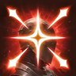
Deadshot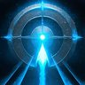
Snipe- Gale Arrow
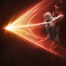
Drill Dart- Tempest Shot
- Marking Shot
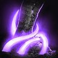
Snare Shot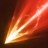
Burst Arrow
Скиллы и Specialty
Уровни — суммарные (экипировка, Arcana, Дэванион тоже считаются).
Deadshot 20 ур.
Главный урон. Держи на отдельной кнопке, бей под Precision. Заряд можно додержать — но не начинай каст перед механикой с движением.
Specialty: +30% скорости скилла • доп. урон при попадании. Третьим — мобильный Specialty (можно двигаться во время каста).
Snipe 16 ур.
Обычная атака между делом: восстанавливает MP и сокращает КД Deadshot.
−1 сек КД Deadshot при попадании + открывает Tempest Arrow (4-й удар в цепочке).
Tempest Shot 16 ур.
На 16 берём +20% скорости скилла вместо +10% крита — быстрее вклинивается в ротацию.
Drill Dart 16 ур. — топ
На 16 — Specialty с дополнительной активацией. Жмёшь один раз, но каждый удар отдельно прокает Multi-Hit / Perfect Chance / Double Chance.
Gale Arrow 16 ур. — приоритет
Твой постоянный бафф: +15% скорости боя и +15% PvE урона.
На 16 — −10 сек КД: бафф можно держать без пауз.
Marking Shot 12 ур.
Даёт Precision. На 12 — Specialty +5 сек к длительности Precision. Только ручная кнопка.
Snare Shot 12 ур.
Нужен ради Slow, который включает Burst Arrow. Живёт во втором стеке атак.
Burst Arrow низкий приоритет
В ротации остаётся, но Specialty 16 (шанс −КД) качается последним.
Ситуативные скиллы
- Explosion Trap (12 ур.) — мобильность вместе с Marking Shot, экономит стамину.
- Suppressing Arrow — для механик стаггера, без вложений.
- Arrow Scattershot — вне ротации, КД-Specialty не берём.
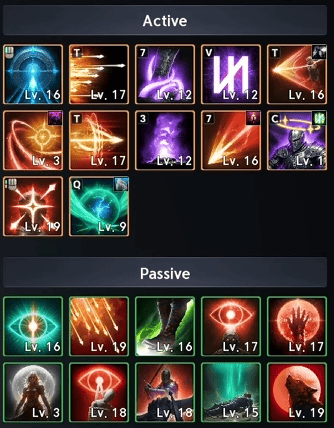
Пассивки — порядок
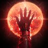
Hunter's Resolve- Focused Eye
- Hunter's Soul
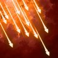
Concentrated Fire- Rooting Eye
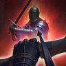
Melee Fire
Порядок приоритета: качай по списку сверху вниз, уровень — по возможности.
Те же бонусы ищи в броне, бижутерии, Arcana и Дэванионе — не гонись за одним идеальным предметом.
Стигмы
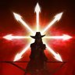
Supporting Fire15 ур. — КД синхронно с VaizelМало очков? Держи Bow of Blessing и Supporting Fire на 5, чтобы дотянуть Griffon Arrow до 15. Потом веди Griffon к 20.
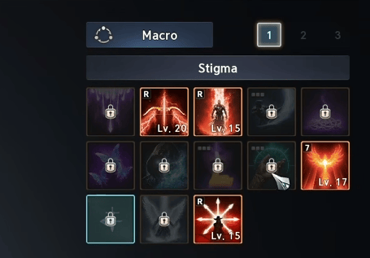
Макрос
Выключи Skill Queue. Разложи атаки в два стека, баффы — отдельно.
Стек 1
Gale Arrow → Drill Dart → Tempest Shot
Стек 2
Griffon Arrow → Snare Shot → Burst Arrow
Баффы (вручную)
Vaizel's Authority • Supporting Fire • Bow of Blessing
Отдельные кнопки: Marking Shot и Deadshot. Snipe — на обычной атаке.
В макрос: Gale Arrow — 10 мс, Griffon Arrow — 10 мс. Баффы в макрос не ставим.
Ротация
- Vaizel's Authority + Supporting Fire + Bow of Blessing
- Макрос дважды → Gale Arrow и Griffon Arrow
- Marking Shot → Precision
- Deadshot — зарядить и отпустить
- Держи макрос + Snipe, вклинивая Deadshot по КД
Экипировка
Данж-шмот — нормальная база. Крафт не обязателен: считай ~70% материалов как ориентир по бюджету.
Оружие
Броня Nuakum — Soul Binding
- Шлем — Double Chance + Incoming Heal
- Плечи — Critical Damage Boost + Double Chance
- Грудь — Damage Boost + Perfect Chance
- Поножи — Perfect Chance
- Перчатки — Combat Speed + Perfect Chance
- Сапоги — Move Speed + Perfect Chance
- Плащ — Double Chance
Остальные строки — Attack, Accuracy, Focused Eye, Hunter's Resolve.
Бижутерия
- Ожерелье — Combat Speed, Might, Precision, Hunter's Resolve, Focused Eye
- Кольца (2) — Might + уровни: Deadshot • Gale Arrow • Drill Dart • Tempest Shot
- Серьги (2) — Move Speed, Precision, Might, Hunter's Resolve, Focused Eye
Перед заменой кольца проверь суммарные уровни скиллов — можно случайно уронить Specialty ниже порога.
Камни
Синие Attack/Accuracy — норм на старте. Цель — жёлтые с Weapon Damage Boost. Не сливай ресурсы в перероллы, пока не закрыты скиллы и Arcana.
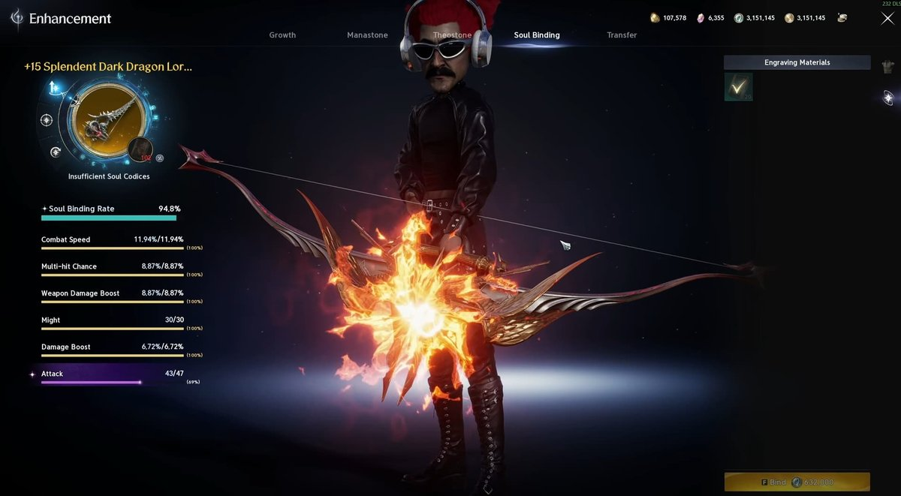
Лайфхак: трансфер с дешёвого шмота
Проверяй жёлтые вещи низкого уровня — перчатки с Combat Speed дешевле прокачать как источник и перенести, чем точить эндгейм-перчатки. Смотри превью трансфера.
Arcana, питомцы, титулы
Arcana
В приоритете: Deadshot, Drill Dart, Burst Arrow, Gale Arrow + активные пассивки. Комбинируй с кольцами, чтобы добить нужные уровни.
Питомцы / Genus Insight
Attack, Accuracy, Crit Hit, Damage Boost, Crit Damage, Smite. Хороших роллов достаточно — идеал не обязателен.
Пантеон
Divine-статы: Time, Destruction, Wisdom, Justice. Статуя Zikel's Apparition — 14 000 осколков в Nightmare-магазине.
Крылья
Nightmare Wings — долгая цель. Dark Veil Wings — рабочая альтернатива (Ferocious Horn Den / рынок).
Титулы
- Unbound by Genus — все 5 категорий Genus Insight до 10 ур.
- Dominator of Dimensions — 25 крыльев. Раньше можно взять Saint of Altgard (Асмодиан).
- Empty Closet — 700 скинов, долгосрок. Альтернатива: Through Hell and Back (Ru-данж).
Частые ошибки
- Не жми баффы перед механикой. 5 секунд баффа перед 10-секундной неуязвимостью босса — это выкинутый КД. Дождись окна.
Дэванион: доски
Доски не рассчитаны на полное заполнение — иди по маршруту под свои скиллы.
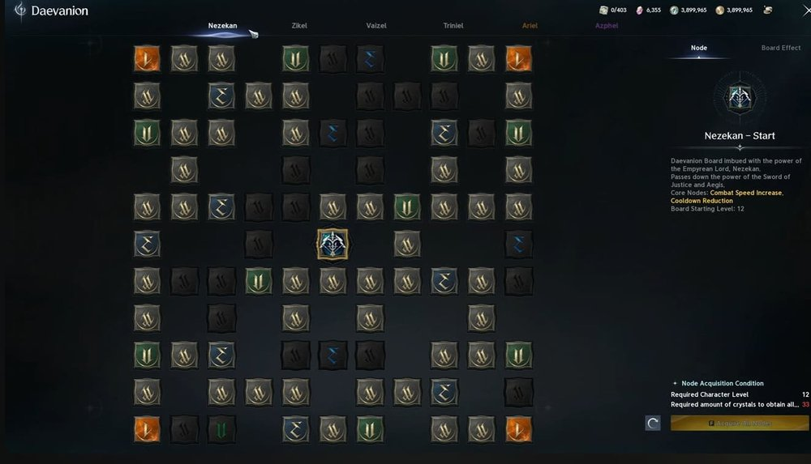
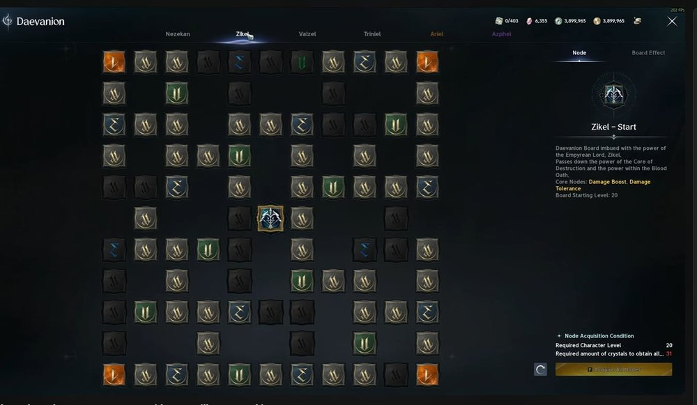
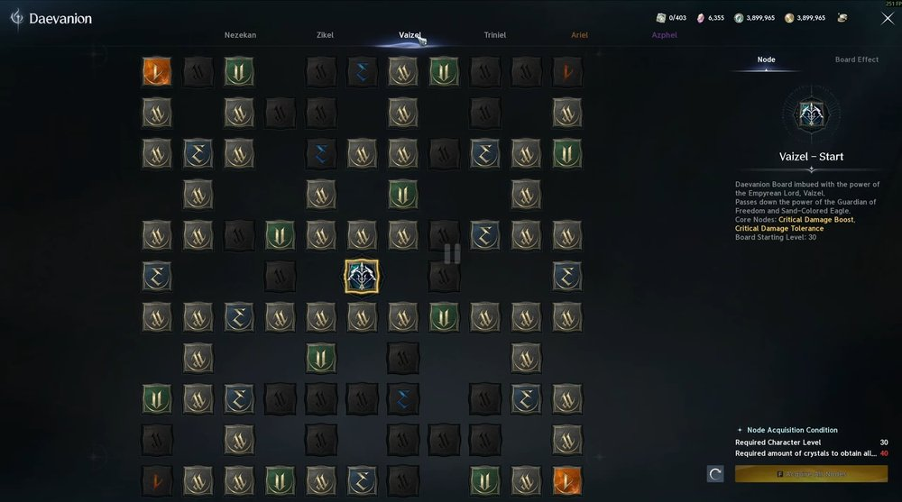
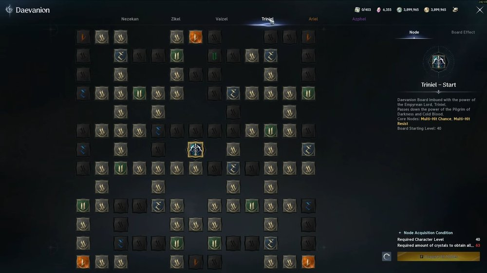
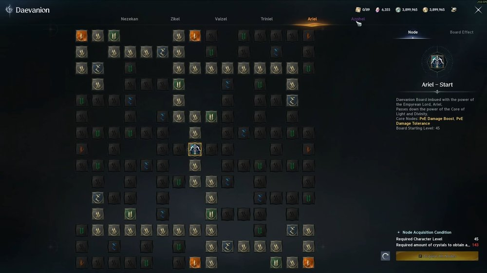
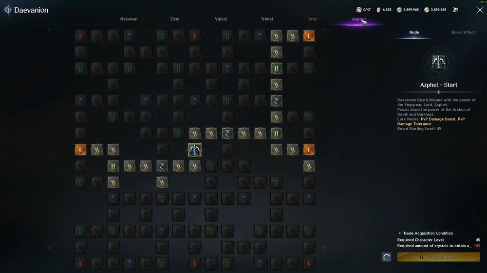